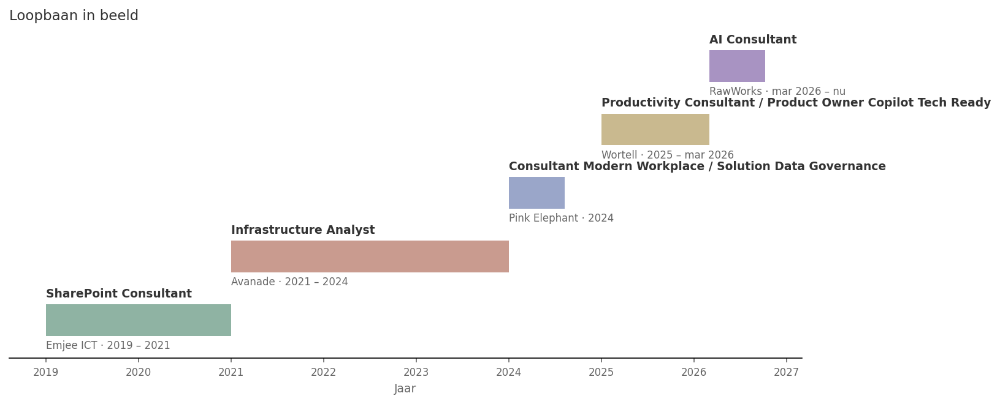
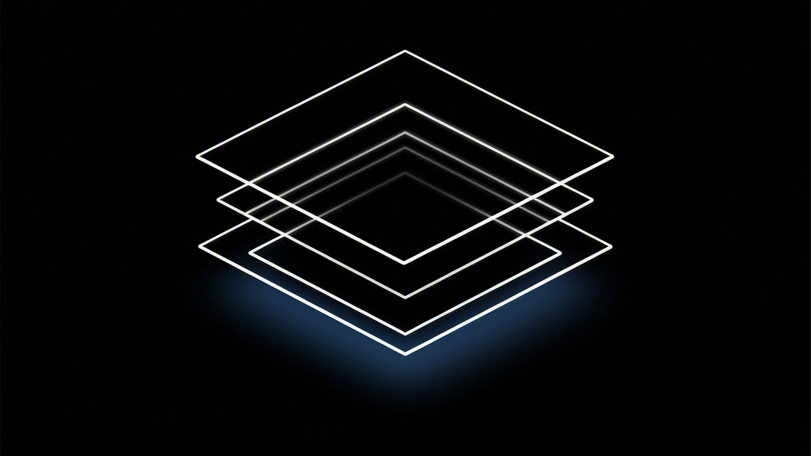
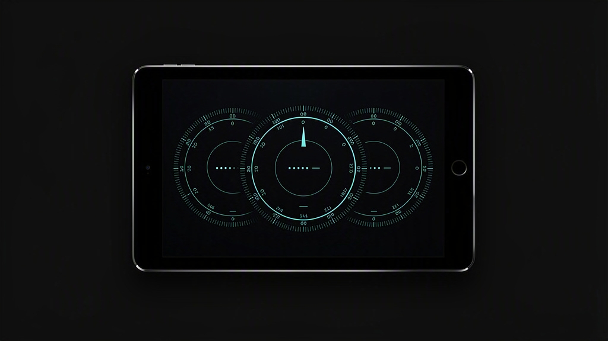

AI-agents en multi-agent systemen
Met Copilot Studio, Azure AI Foundry en RAG. Van een multi-agent offertesysteem tot agents voor Commercie, Recruitment en HR.
AI Consultant · RawWorks
Ik bouw AI-agents en multi-agent systemen met Copilot Studio en Azure AI Foundry, en zorg dat de Microsoft 365-omgeving eronder veilig en klaar is voor AI.
01 · Expertise
Met Copilot Studio, Azure AI Foundry en RAG. Van een multi-agent offertesysteem tot agents voor Commercie, Recruitment en HR.
Assessments en workshops: tenant-configuratie, Purview-databeveiliging en Conditional Access.
Baselines en compliance-kaders, zodat data en AI veilig gebruikt worden.
Tenant-to-tenant migraties en data-assessments, met Quest en ShareGate.
Trusted advisor voor IT en business, van proof-of-value tot adoptie.
PowerShell en Power Platform om terugkerend werk weg te automatiseren.
02 · Ervaring
RawWorks · Interstellar Group
Wortell · Lijnden
Pink Elephant · Naarden
Avanade · Amsterdam
Emjee ICT

03 · Certificeringen
Opleiding
Hogeschool Rotterdam · 2018 – 2019
ID College, Gouda · 2014 – 2017
Nu aan het leren
Wat ik leer zet ik als publieke repo op GitHub.
Bekijk op GitHub04 · Projecten
Beelden gemaakt met FLUX.2-pro, gecontroleerd door Azure AI Content Safety. Alt-teksten geschreven door Phi-4-multimodal en vertaald met Azure Translator.

Microsoft Foundry volledig als code: Bicep en azd, keyless, RBAC, tracing, budget en CI/CD met OIDC.
De agent achter deze site: Foundry prompt agent met File Search, evaluaties, spraak en een live avatar.

Een instrumentenpaneel voor Claude Code op een oude iPad: rate limits, live sessies en gedelegeerd werk, leesbaar vanaf de andere kant van de kamer.
05 · Vacature-check
Plak een vacaturetekst of upload een PDF. Azure Content Understanding leest de PDF, een Foundry-agent vergelijkt de eisen met het CV en de GitHub-repo's, en geeft per eis het bewijs. Eerlijk: ontbreekt iets, dan staat het er.
06 · Vertrouwen
Een agent die over iemand praat moet eerlijk blijven, privacy respecteren en niet te misleiden zijn. Dat wordt hier niet beloofd maar gemeten: met een eigen evaluatieset en een geautomatiseerde aanvalsscan van de AI Red Teaming Agent in Microsoft Foundry.